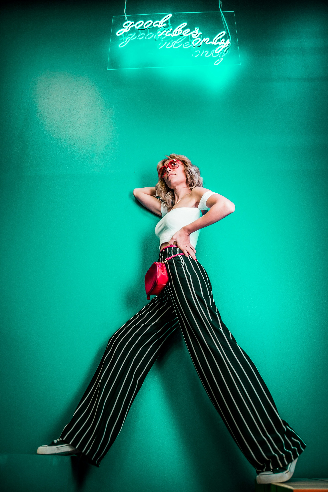
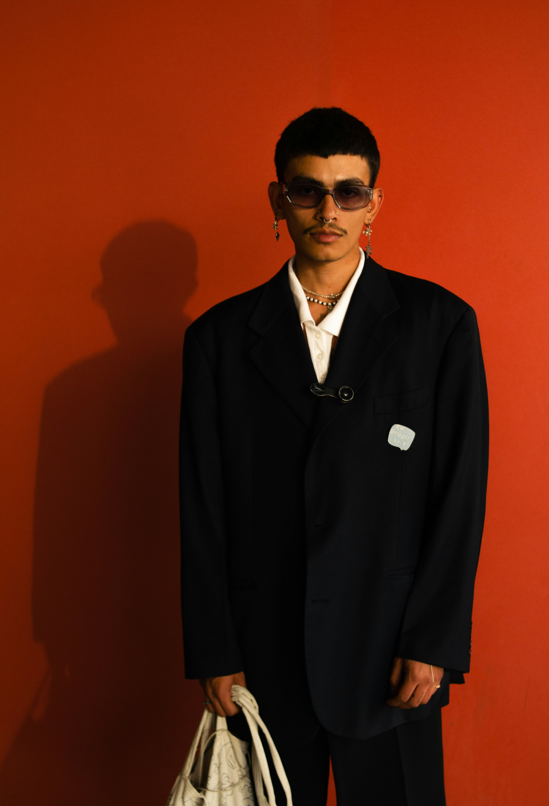

CHROMA

Chroma lessons · No. 01
complementary
red sits opposite
green on the wheel.
side by side, both
look louder than
they do alone.
a little red goes
a long way.

red sits opposite
green on the wheel.
side by side, both
look louder than
they do alone.
a little red goes
a long way.


the head steps in
front of the title.
one small overlap
and a flat page
turns into a space
you could walk into.